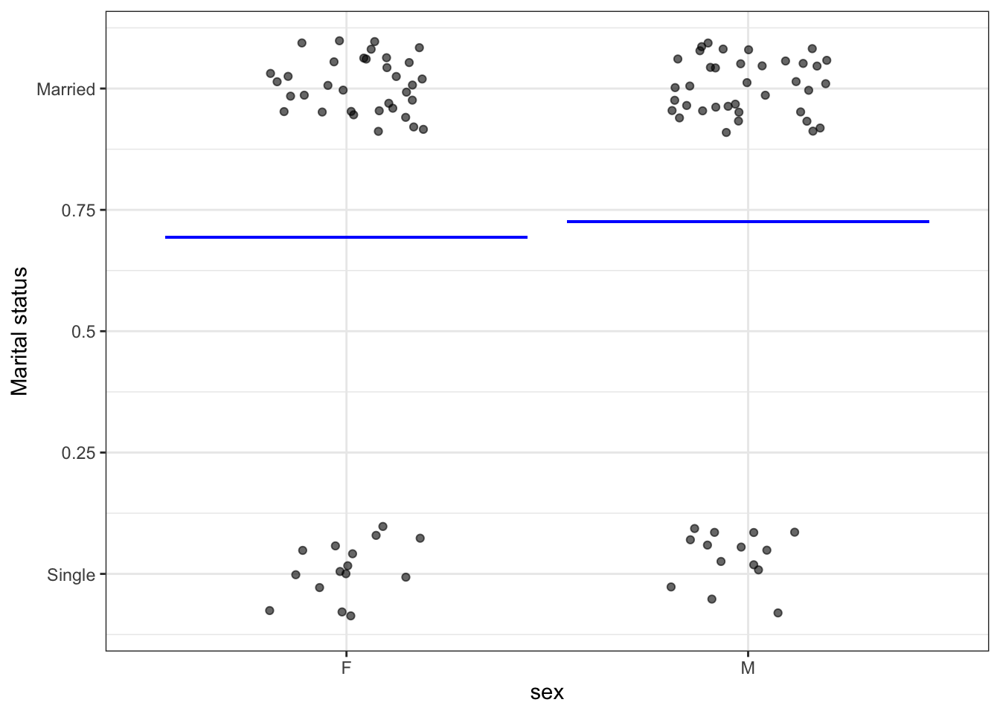
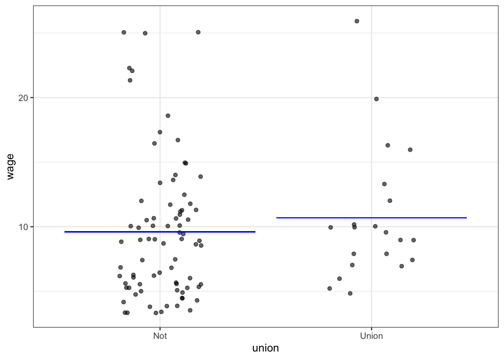

Chapter 3 Graphics
3.1 Graphical confusion: An introductory activity
Introductory statistics courses conventionally feature many types of graphics, e.g. histograms, stem-and-leaf plots, theoretical probability densities (often with tail probabilities annotated), bar charts, scatter plots, cross-tabulations, …
The graphics in this table come from a nice, open-source textbook: OpenIntro Stats (4/e). This book is used successfully in many colleges, ranging from two-year colleges to elite, private, four-year schools. I paged through the book, capturing each new mode as I encountered it.
As you look through the collection, note how often …
- it’s readily evident what a single “unit of observation” is.
- the axes correspond to a data variable
- one or another of the axes is not identified at all or the scale of the axis can be safely ignored.
- similar glyphs are used for completely different purposes
| Image modalities from | OpenIntro Stats |
|---|---|
 |
|
 |
|
 |
 |
 |
|
 |
|
 |
 |
 |
|
| Not from Open Intro | Not from Open Intro |
 |
 |
3.2 A simplifying proposal
Let’s reduce the number of graphical modes arranging things so …
- “Raw” data can be expected to be shown in a graphic.
- Each axis is always a variable, and the y axis is consistently used to display a response variable.
- The kind of glyph unequivocally identifies what is being displayed.
3.2.1 Data Layer
- The frame is something like this:

- Data is always plotted with a ✺
- Jittering and transparency are used to deal with overplotting.
Adding in color and facetting, up to four variables can be shown, but relationships become progressively more difficult to read.
3.2.2 Model layer
Glyph is a more-or-less horizontal line or curve showing the model output at each value of the explanatory variables.
mod1 <- lm(height ~ ns(mother,2) * sex,
data = Galton)
mod_shape <- mod_eval(mod1,
mother = seq(55,72,length = 100),
interval = "prediction")
mod_shape2 <- mod_eval(mod1,
mother = seq(55,72,length = 100),
interval = "confidence")
gf_point(height ~ mother | sex, data = Galton,
alpha = 0.2) %>%
gf_line(model_output ~ mother | sex, data = mod_shape, size = 2)
3.2.3 Interval layer
Glyph is either a ribbon or an I-bar.
gf_point(height ~ mother | sex, data = Galton,
alpha = 0.2) %>%
gf_ribbon(lower + upper ~ mother | sex,
data = mod_shape, alpha = 0.2,
inherit = FALSE)
Note: In the context provided by the data, it’s always clear whether a band is a prediction interval or a confidence interval.
gf_point(height ~ mother | sex, data = Galton,
alpha = 0.1) %>%
gf_ribbon(lower + upper ~ mother | sex,
data = mod_shape2, alpha = 0.4,
inherit = FALSE)
Two distinct questions:
- Prediction: Does knowing the mother’s height meaningfully narrow a prediction of the adult child’s height?
- Description: Is the mother’s height connected with the adult child’s height?
3.2.4 Density layer
The data points themselves indicate the joint probability density.
Use another glyph to show conditional density: a violin:
gf_jitter(Poverty ~ Depressed, data = NHANES,
alpha = 0.03, width = 0.2) %>%
gf_violin(alpha = 0.1, fill = "black")
3.3 EXERCISES:
- Is this a confidence interval or a prediction interval.
- For which group is low weight more common Weight ~ Smoker | Gender?
- Sketch out density violins.
- Which of these tells the story more clearly: Hourly number of rentals versus Time of Day and Client type and Weekday or Hourly number of rentals versus Weekday, Time of Day (color), and Client type.